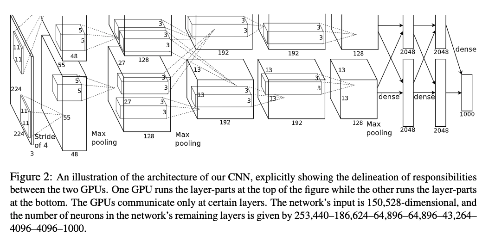
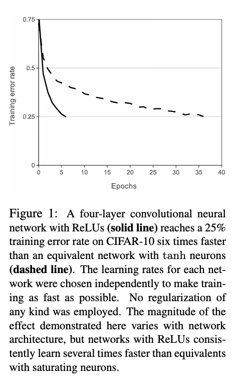
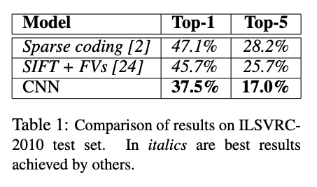
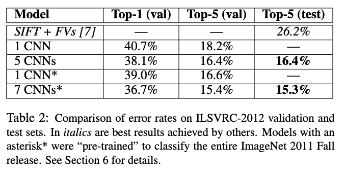

ImageNet Classification with Deep Convolutional Neural Networks
Keywords: AlexNet, Dropout, ReLU
All the figures and tables in this post come from ‘ImageNet Classification with Deep Convolutional Neural Networks’1
Basic Works
- Large training sets are available
- GPU
- Convolutional neural networks, such as ‘Handwritten digit recognition with back-propagation networks’2
Inspiration
- Controlling the capacity of CNNs by varying their depth and breadth.
- CNNs can make strong and mostly correct assumptions about the nature of images.
Contribution
Training one of the largest convolutional neural networks to IMageNet ILSVRC-2010
- architecture

- architecture
GPU is used
- Some new feature of CNNs improving its performance
- ReLU Nonlinearity $f(x)= max(0,x)$
- ReLU is much faster than $\tanh(x)$ or $\frac{1}{1+e^{-x}}$
- Jarrett et al.3 had tried different other nonlinear function such as $f(x)=|\tanh(x)|$ to prevent overfitting

- Local Response Normalization
- ReLU does not require input normalization to prevent them from saturating.
- Local response normalization scheme aids generalization:
- where $a^i{x,y}$ is the activity of a neuron computed by applying kernel $i$ at position $(x,y)$ and the applying the ReLU nonlinearity, the respons-normalized activity $b^i{x,y}$. And $n$ means ‘adjacent’ kernel maps at the same spatial position and $N$ is the total number of kernels in the layer
- Hyper-parameters whose values are determined using a validation set, and $k=2$, $n=5$, $\alpha = 10^{-4}$ and $\beta =0.75$ is used
- normalization is used after ReLU
- 13% error without nomarlization and 11% with normalization
- Overlapping Pooling
- Traditionally neighborhoods summarized by adjacent pooling units do not overlap
- if using $stride = 2$ and $kernel\,size=3$ error rates by 0.4%
- ReLU Nonlinearity $f(x)= max(0,x)$
- preventing overfitting
- Data augmentation
- extracting random patches from a bigger image
- horizontal reflections
- in testing, test 5 patches as well as their horizontal reflections and averaging the prediction of all this prediction(softmax output)
- altering the intensities of the RGB channels in training image, PCA first:
- where $\boldsymbol{p}_i$ is eigenvector and $\lambda_i$ is eigenvalue and $\alpha_i$ is random variable. And to a particular training image $\alpha_i$ is drawn only once. And when the image will be used again, $\alpha_i$ could be updated
- dropout: select some neurons and set their output $0$ with probability 0.5. This means each time for the input data, they are using a different architecture.
- dropout is used in the first two full-connected layers in figure 2.
- without dropout the network exhibits substantial overfitting.
- dropout roughly doubles the number of iterations required to converge.
- Data augmentation
Experiment
- batch size of 128 examples, momentum 0.9, and weight decay of 0.0005:
- weight decay is no merely a regularizer, it reduces the model’s training error
- where $i$ is iteration index, $v$ is the momentum variable, $\epsilon$ is the learning rate, $(\frac{\partial L}{\partial w}|{w_i}){D_i}$ is the average gradient of batch $D_i$ with respect to $w$, evaluated at $w_i$
- equal learning rate for each layer.
- when the validation error rate stopped improving, divide the learning rate by $10$.
- learning rate initialized at $0.01$
Result


Personal Summary
This paper rebirth CNNs in 2012. GPUs are an important helper for training CNNs.
References
1. Krizhevsky, Alex, Ilya Sutskever, and Geoffrey E. Hinton. “Imagenet classification with deep convolutional neural networks.” In Advances in neural information processing systems, pp. 1097-1105. 2012. ↩
2. LeCun, Yann, Bernhard E. Boser, John S. Denker, Donnie Henderson, Richard E. Howard, Wayne E. Hubbard, and Lawrence D. Jackel. “Handwritten digit recognition with a back-propagation network.” In Advances in neural information processing systems, pp. 396-404. 1990. ↩